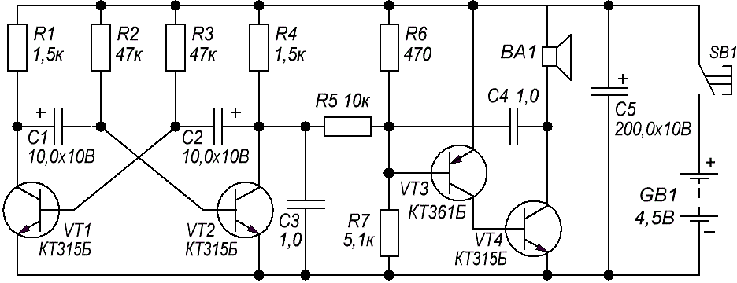

Двухтональный звонок на транзисторах
Двухтональный звонок (рис. 1) состоит из двух генераторов: генератора тона, выполненного на транзисторах VT3 и VT4, и симметричного мультивибратора на транзисторах VT1 и VТ2. Выход мультивибратора соединен с генератором тона через резистор R5, поэтому он будет периодически подключаться к общему проводу (минусу источника питания), то есть параллельно резистору R7. При этом частота генератора будет изменяться скачком: при закрытом транзисторе VT2 из динамической головки ВА1 будет слышен звук одного тона, при закрытом — другого. Конденсатор С3 сглаживает крутые фронты импульсов мультивибратора, приводящие к неприятным тонам в звучании звонка.

Рис. 1 - Схема двухтонального звонка
На тональность звука влияют резисторы R7 и R5 и конденсатор С4. На частоту переключения тональности — резисторы R2, R3 и конденсаторы C1, С2.
Таблица 1
| Обозначение | Наименование | Номинал | Количество | Примечание |
|---|---|---|---|---|
| BA1 | Динамик | 1 | ||
| C1, C2 | Конденсатор электролитический | 10 мкФ/10 В | 2 | |
| C3, C4 | Конденсатор | 1 мкФ | 2 | |
| С5 | Конденсатор электролитический | 200 мкФ/10 В | 1 | |
| GB1 | Элемент питания (батарейка) | 4,5 В | 1 | |
| R1, R4 | Резистор постоянный | 1,5 кОм/0,125 Вт | 2 | |
| R2, R3 | Резистор постоянный | 47 кОм/0,125 Вт | 2 | |
| R5 | Резистор постоянный | 10 кОм/0,125 Вт | 1 | |
| R6 | Резистор постоянный | 470 Ом/0,125 Вт | 1 | |
| R7 | Резистор постоянный | 5,1 кОм/0,125 Вт | 1 | |
| SB1 | Выключатель | 1 | ||
| VT1, VT2, VT4 | Транзистор биполярный | КТ315Б | 3 | |
| VT3 | Транзистор биполярный | КТ361Б | 1 |
Применяемые в конструкции резисторы и конденсаторы могут быть любых типов, малогабаритные. Например, можно установить полярные конденсаторы К50-35, остальные К10-17.